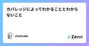
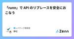
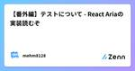
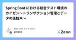

Zennの「Test」のフィード
フィード

オニオンアーキテクチャにおけるテストコーディングガイド 23
23
Zennの「Test」のフィード
! この記事は 株式会社ログラス Productチーム Advent Calendar 2024 のシリーズ 2、21日目 の記事です。 はじめに アドベントカレンダーも終盤に差し掛かってきましたね！ シリーズ2ではテストコードについて書こうと思います。 ここ2年間くらいで採用やイベントを通じて色々な会社のエンジニアとお話させてもらった中で、テストコードの書き方にはかなりブレがあるように感じました。 ユニットテストについてはあまりブレがなく、どの方もドメイン層のEntityやValueObjectについて網羅的に書きましょうとなっていました。 一方で、インテグレーションテストにつ...
16時間前

MATLABでテストを活用して手戻りを防ぐ（ソフト開発者以外も使おう！）
Zennの「Test」のフィード
Advent Calender 2024の12/10枠です． MATLABネタが降ってきたので書こうと思ったら枠が空いていましたので投稿します．（本記事を書いているのは12/20です） https://qiita.com/advent-calendar/2024/matlab はじめに 最近MATLABのテスト機能を使ってみたら助けられることが多くありましたので，使い方を備忘もかねてまとめておきます． 気軽にシンプルに使うためになるべく高度なことはしません．単体の関数やスクリプトを対象とするユニットテストのみです．「ソフトウェアの開発者以外」も積極的に使いましょう！！ 参考： htt...
2日前

[Flutter×BrowserStack]：E2Eテストで実現する高品質アプリ開発
Zennの「Test」のフィード
BrowserStack BrowserStackは、クラウド上でテスト環境や自動化環境を提供する有料サービスで、開発者から高い人気を誇るツールです。 このサービスを利用することで、様々なブラウザやオペレーティングシステム、さらに実際のデバイスでの操作やテストを簡単に行うことができます！ 特に、実機テストやE2Eテストを効率化したいFlutter開発者にとって、BrowserStackは理想的なソリューションです。 今回は、このBrowserStackを使ったFlutterのE2EテストやUIテストでの活用事例を一緒に見ていきましょう！ ! モバイルアプリケーション開発者向けの記事で...
2日前

【Flutter】Golden Test に触れてみる
Zennの「Test」のフィード
初めに 今回は Golden Test について簡単にまとめてみたいと思います。 記事の対象者 Flutter 学習者 Golden Test について簡単に知りたい方 目的 今回は、Flutter の Golden Test について簡単に触れて、具体的なメリットなどを見ていくことが目的です。 Golden Test とは Writing a golden file test for package:flutter には以下のような記述があります。 Golden file tests for package:flutter use Flutter Gold for...
2日前

golangのmockとテーブルテストの実装例
Zennの「Test」のフィード
概要 golangのテスト用のモックとテスト実装のはなしです。答えはない。 モックとは ウェブのバックエンドアプリケーションのテストでは、外部APIなどテスト対象が依存しているリソースのモックを作る場合が多く、モックを作成するツールもたくさんあります。 golang/mock、vektra/mockery、uber-go/mockなど多くのモックツールは、Golangのインタフェースからモック実装を作成するようになっています。 生成されたモックは概ね以下のような使い方になります(vektra/mockeryのドキュメントより） import ( "testing" ...
2日前

Swift Testingは採用するべきか
Zennの「Test」のフィード
結論採用！ Swift Testingとは Swift Testingとは、一言で表すのであれば、 WWDC 2024で発表され、Xcode 16から使えるようになった、XCTestではできなかった色々な表現を使ってTestを書けるFrameworkです。 ちなみに、UITestはSwift Testingには含まれておらず、Unit TestのためのFrameworkとなっております。 情報源 Swift Testingの公式からの情報源はとても豊富なので、いくつか紹介していきます。 1: GitHub Swift TestingはOpen Sourceなのでコードを見るこ...
2日前

Playwright を使ったE2Eテストの導入
Zennの「Test」のフィード
! この記事は BABY JOB Advent Calendar 2024 シリーズ1の19日目の記事です。 はじめに この春よりフロントエンドエンジニアとしてキャッシュレス決済サービス「誰でも決済」の開発に携わっております、benzoh です。 そしてこの夏、無事にサービスをリリースすることができました！ この記事では開発開始から今日までに取り組んだことの中で「Playwright を使ったE2Eテストの導入」について共有したいと思います。 特に、QRコードを活用した決済フローのテスト自動化について、実践的な知見を交えながら解説していきます。 なお、本記事は Playwright...
3日前

【Flutter】Widget Test に触れてみる
Zennの「Test」のフィード
初めに 今回は Widget Test について簡単に触れてみたいと思います。 筆者自身 Widget Test を実装する機会が少なかったため、基本的な実装方法等をまとめておきたいと思います。 今回は公式のドキュメントをもとに実装を進めていきます。ユーザーの複雑な操作のシミュレーション等は行わないので、ご了承いただければと思います。 記事の対象者 Flutter 学習者 Widget Test に触れてみたい方 目的 今回の目的は先述の通り、 Widget Test の基礎的な実装方法を知ることです。 公式ドキュメントとして公開されている An introduction...
3日前

Vitest の mockClear / mockReset / mockRestore の違いについて
Zennの「Test」のフィード
はじめに こんにちは！レバウェル開発部アドベントカレンダー18日目です。 普段、スカウトチームではテストランナーに Vitest を使っています。今回は、Vitestのモックをクリアする方法について紹介します！ Vitest のモッククリア 公式ドキュメントを読むと、モックをクリアする方法は一見下記の 3 通りあるように見えます。 mockClear mockReset mockRestore しかし、一度読んだだけでは、それぞれのメソッドをどの用途で呼び出せばいいのかわからなかったので調べてみました。 この記事で扱うサンプルプログラム 説明に入る前にこの記事で扱うサンプ...
4日前

bun testが速いのでvitestから置き換えたらめちゃ高速化された 41
Zennの「Test」のフィード
きっかけ ユニットテストはvitestを使ってます まあ十分速い でもCIで全testを回すとけっこう時間がかかる bunのtestが速いらしい。置き換えよう 置き換えた結果 before (vitest) 1000弱のtestを回すのに2分44秒かかってた after (bun + vitest) 9割方のtestをbunで実行して2秒。速すぎる bunに移行が難しかった一部だけvitestで実行して7秒 bunってどうなの？ https://bun.sh/ どうなんですかね？ State of JavaScript 2024: Testi...
5日前

WACATE 2024 冬 招待講演の内容を咀嚼する
Zennの「Test」のフィード
鈴木さんの発表、当日のお話だけでは消化しきれず（というか飲み込むところでつまづいている）、咀嚼の時間を確保しました。 ちなみに、消化しきれないのは私のベース知識が乏しいからなのと、処理速度の問題なので、構成がどうとかそういう意図は全くありません。 とりあえず、発表スライドを改めて読み直そうと思います。 そして、思ったことを書き留めていき、その過程で飲み込めるものは飲み込んでいけるといいなと思っています。 https://speakerdeck.com/kzsuzuki/20241214-wacatedong-tesutoshe-ji-ji-fa-wotiyotutofu-kan-site...
5日前

React Native アプリのテスト経験を通じて得た知見
Zennの「Test」のフィード
こんにちは、QAエンジニアのEnnです。 今年に入ってからReact Nativeで開発したアプリのテストに携わる機会がいくつかありましたが、10月から本格的にアジャイル開発でReact NativeアプリのQAを担当することになりました。チームのスプリントは2.5日で回しており、基本的には1スプリント内で開発からQAまで完結し、長くても2スプリントで開発からQAを完了するようにしています。何回かリリースサイクルを経験する中で、これまでのモバイルアプリのQA経験とは異なる点を感じることがありました。 今所属しているチームで新しい機能については手動テストで対応し、リリース後にはMagicP...
5日前

【Streamlit】Streamlitのテスト用モジュール入門
Zennの「Test」のフィード
こんにちは。データエンジニアの山口歩夢です！ Streamlitにはたくさんの便利な関数が用意されていて、簡単にアプリケーションの開発ができますが、AppTestというテスト用にも便利なモジュールも用意されています。 こちらを活用することで、テストコードを非常に手軽に書くことができます。 テストコードを書くことで、ユーザーがウィジェットに入力した内容や出力値などを検証することができ、アプリケーションの保守性を高めることができます。 本記事ではpytestとAppTestを組み合わせてテストを行いますが、pytestに限らず、様々なテストツールを使用できるようです。 https://doc...
5日前

【Go】LocalStack活用メモ：ローカル開発環境からテストまで 1
Zennの「Test」のフィード
この記事は何 ローカル環境でAWSサービスをエミュレートできるLocalStack、便利ですよね。 本当のAWS環境を使わないようにすることで、セキュリティの担保(詳細は後述)やうっかりとした事故の防止を実現しつつ、アプリケーションのコード内で無用なモックを用意する必要もなくなります。 LocalStackの活用方法の様々な記事がありますが、Go言語での開発において、1:ローカル開発環境用途、2:テスト時の使い捨て用途の両方をまとめて整理した記事は見かけませんでした。本記事では両者を整理して、スッとLocalStackを活用できることを目的とします。 具体的に取り扱う内容は以下の通り...
6日前

テストの sharding を効率化する Tenbin というツールを作った 14
Zennの「Test」のフィード
! この記事は ソフトウェアテスト Advent Calendar 2024 の 15 日目の記事になります。 過去のテストの実行時間を利用してテストの sharding を効率化する Tenbin というツールを作りました。 https://github.com/nissy-dev/tenbin この記事では Tenbin が解決する課題と内部実装の詳細について解説します。ツールの使い方などは、リポジトリの README をぜひ読んでもらえればと思います。 Tenbin が解決する課題 テストの実行時間を削減するために、CI などではテストを sharding (分割) して実行...
7日前

カバレッジによってわかることとわからないこと
Zennの「Test」のフィード
はじめに テストコードを書く際、よく話題に上がるのが「カバレッジ率」です。 「カバレッジ率100%を目指すべき」という意見もあれば、「カバレッジ率にこだわりすぎるのは良くない」という意見もあります。 この記事では、カバレッジ率から何がわかって、何がわからないのかを整理し、カバレッジ率との付き合い方について考えます。 カバレッジ率とは カバレッジ率（コードカバレッジ）とは、テストコードによって実行されたコードの割合を示す指標です。 例えば、カバレッジ率80%であれば、全体のコードのうち80%がテストによって実行されたことを意味します。 一般的なカバレッジの種類としては以下があります...
7日前

「runn」で API のリプレースを安全におこなう 2
Zennの「Test」のフィード
この記事は「レバテック開発部 Advent Calendar 2024」の 14 日目の記事です！ 昨日の記事は、dema96さんの「E2Eテストのテスト範囲と優先順位を考えてみた」でした。 TL;DR API のリプレースを計画しているが、更新系の API の同等性検証をどうやるか悩んでいた API シナリオテストツール「runn」の「HTTP の API を実行する機能」と「データベースへのクエリを実行する機能」を使って、更新系 API の同等性検証をやってみた 実務で活用に向けてより詳細な検証が必要だが、API 実行後のデータベースの状態の検証やデータ駆動テストなど、API ...
8日前
Go自動テスト - Testcontainersとrunn を用いたAPIテストの実践- 2
Zennの「Test」のフィード
この記事はGo Advent Calendar 2024の 14 日目の記事です🎄 はじめに 先日、専用コンテナを利用したユニットテストのアプローチとして、Testcontainers for Goを利用した具体例を紹介させていただきました！ https://zenn.dev/finatext/articles/finatext-advent-calendar-2024-testcontainers-go まだ読んでない人は、ぜひチェックといいねをよろしくお願いします 👍 本記事では、Testcontainers と合わせて、runn を用いた API テスト基盤について詳しく解説し...
8日前

【番外編】テストについて - React Ariaの実装読むぞ
Zennの「Test」のフィード
! この記事は React Aria の実装読むぞ - Qiita Advent Calendar 2024 の 14 日目の記事です。 こんにちは、フロントエンドエンジニアの mehm8128 です。 今日は 枠稼ぎ番外編として、React Aria で行われているテストについて書いていきます。 React Aria に導入されているテスト React Aria では主に 3 種類のテストが導入されています。 1 つ目は Storybook です。 開発中に使うのはもちろん、おそらく Chromatic も利用されています。CI で回しているようなコードが見当たらなかったのですが...
8日前

Spring Boot における結合テスト環境のカイゼン〜トランザクション管理とデータの後始末〜
Zennの「Test」のフィード
! この記事は BABY JOB Advent Calendar 2024 の 14 日目の記事です。 はじめに 2 日目に引き続き、結合テストのカイゼンについての話です。 https://zenn.dev/babyjob/articles/b155f1f8bcb6db 今回は、データベースのトランザクション管理とデータの後始末についてカイゼンしたことをご紹介します！ 環境 Java 17 Spring Boot 3.3.6 Spring Boot Starter Data JPA 3.3.6 MariaDB 10.6.14 背景 カイゼン前の結合テスト 次のような...
8日前